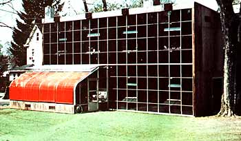
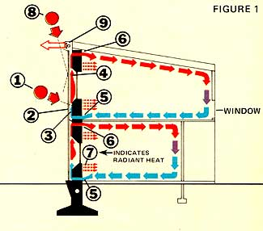
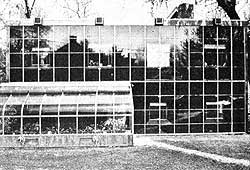
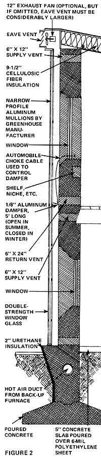

Up in New Jersey, a guy by the name of Doug Kelbaugh has designed (and moved his family into) a solar home that's not only (1) cozy in winter and (2) cool in summer, but (3) aesthetically pleasing to boot!
Yes, Virginia, a solar-heated and -cooled house can be beautiful. That, among other things, was what architect Douglas Kelbaugh set out to prove when he designed and built his family's all-new Princeton, New Jersey solar home, and it shows!
The split-level dwelling's major design element (as you can see from the accompanying photos) is a massive, south-facing "collector wall" made of 15"-thick poured concrete that has been painted flat black and faced with 600 square feet of double-pane glass. (The two layers of glass are mounted in greenhouse-type aluminum channels, set 6" in front of the slab.) This passive collector not only (A) heats the three-bedroom house in winter and (B) helps cool it in summer, but (C) lends aesthetic appeal to the structure as a whole, something that, until recently, has been missing from too many solar home designs.
The rays of the low winter sun (1) strike the glass surfaces of the collector wall nearly perpendicularly and (2) readily pass through to impinge upon the concrete slab (3), which, because it's painted black, absorbs slightly more thermal energy than it reflects. And, since glass is transparent to light but opaque to heat, about two-thirds of the warmth that is radiated from the slab is retained within the collector.
OK. As the air between the glass and the concrete becomes heated, it rises (4), drawing cool air into the collector via floor vents (5) on both of the home's two stories. The sun-warmed air then exits through vents (6) near the ceiling of both stories into various rooms of the house, where it mixes with cooler air, descends, and is ultimately drawn back through the collector again.
(Thanks to an adjustable damper halfway up the solar wall, each floor of the house can be heated independently. Without the damper, most of the warm air generated by the glass-and-concrete "heater" would go straight into the upstairs rooms.)
At night, the massive slab - which has been soaking up the sun's warmth all day - radiates Btu's into all the important rooms of the house, from the upstairs bedrooms and study to the single expansive downstairs "living area." (Doug wisely arranged storage space, a half bath and a formal entrance along the dwelling's "back" - or north - side, to buffer the living quarters from the cold.)
And that's all there is to it. That's the Kelbaugh solar heating system in a nutshell!
THREE SOURCES OF SUPPLEMENTAL HEAT
The giant collector wall, huge as it is, nonetheless supplies Doug's house with "only" 2/3 to 3/4 of its winter heating needs. Thus, the Kelbaugh family relies on three additional sources of warmth to make their home habitable during cold, overcast weather.
The dwelling's primary "backup system" consists of a thermostat-activated, gas-fired, hot-air furnace located in a small basement. This unit's 58,000 Btu/hr. output is delivered to both floors of the house via a system of ducts and registers cast into the poured-concrete south wall.
The Kelbaughs also derive supplemental heat from a Heatilator wood-burning fireplace in the downstairs living room. Because the fireplace combusts warm air and sucks cold outside air into the house, however, Doug feels that it may, in fact, have a net negative effect on heating the structure. (Still, the fireplace does provide localized comfort. And it's certainly aesthetically warming!)
At the front of the building is a small greenhouse that opens into the downstairs living room, thereby (1) expanding usable floor space and (2) providing extra daytime warmth. (The greenhouse's thick concrete floor is (like the outer face of the collector wall) painted black, to increase its rate of heat absorption.)
Of these three sources of supplemental heat, the gas-fired furnace - by far - is used the most.
Even on a hot, muggy July day the Kelbaugh house is comfortable inside. (I know, I visited Doug and his wife on just such a day!) One reason for this is that the light from the high summer sun, unlike the rays of the low winter sun, strikes the collector wall at an oblique angle (see Fig. 1, (8)) and largely "bounces off." (Note: Ole Sol's high summer rays hit the roof of the Kelbaughs' lean-to greenhouse much more squarely and tend to turn the little conservatory into an uncomfortably first-rate solar furnace during this time of the year if the lean-to's roll-down blinds are not deployed.)
Four small electric fans in the eaves of the main building exhaust any hot air that does accumulate in the collector (Fig. 1, (9)). According to Doug, though, it's seldom necessary to turn these fans on, since - if the eave vents are open - the natural "chimney effect" of the heated air between the glass and concrete walls tends to both purge the collector and cross-ventilate the house by drawing cool air from the north side of the structure.
Then too, the concrete of the collector wall, which tends to capture (and retain) the colder night air, makes some contribution to the cooling of the house during July and August.
Doug has added to his home's heating and cooling efficiency by packing the building's three frame walls and roof with "cellulosic fiber derived from recycled newspapers" (that's pulped and treated recycled newspapers, folks). All in all, enough of the insulation was used to achieve an R factor of 18-20 in the rough-sawn cedar plywood walls and 40 in the roof. In addition, a one-inch-thick and two-foot-deep layer of styrofoam was placed around the foundation of the Kelbaugh residence.
Doug and Meg Kelbaugh prefer a cool house, and that's pretty much what they got during their first winter (1975-76) in their new home. (The average downstairs temperature was 63°F, upstairs, 67°.) They made it through the 4,500-degree-day season in relative comfort, though, at a cost of only $108 (in fuel for the backup furnace), a far cry from the $500-plus it would have cost them to heat a comparably sized, non -solarized Princeton house!
The single largest mid-winter problem Doug and Meg have experienced with their new home thus far has been excessive heat loss through the greenhouse. (Over a third of all escaping Btu's went out via the attached lean-to.) Doug figures he's nearly cut that loss in half, however, now that he's converted the single layer of glass that was in the unit's original walls and roof to double glazing.
The Kelbaughs also noted last winter that the temperature inside the greenhouse often fluctuated as much as 25 ° from afternoon to evening. Doug plans to take care of this by putting water-filled, black-painted five-gallon drums in the plant nursery to act as combination heat sinks and plant supports.
About the only operating cost associated with the Kelbaugh heating/cooling setup (aside from that incurred by the backup furnace) is the cost of the electricity required to run the four small eave fans. And that's not much.
Likewise, maintenance costs should be next to nothing since (barring accidental glass breakage) the solar wall can be expected to work perfectly for at least 100 years.
Construction costs are a bit more difficult to pin down, since the solar heating "system" is actually an integral part of the house's overall design. Doug (who acted as his own general contractor) estimates that his solar-heated and -cooled dwelling probably cost $8,000 to $9,000 more to build than a conventional house of comparable size and quality. (The pay-back period for the "solar" part of the house, then, assuming a price escalation of 10% per year for domestic heating fuels over the next few decades (a fairly safe bet), figures out at about 13 years.)
To be sure, Doug Kelbaugh's approach to solar heating and cooling has some limitations that cannot be overcome. For instance: (A) The heat storage capacity of the system is much less than that of installations which employ water or rock heat storage. (B) A mammoth glass-and-concrete "collector wall" can't be added onto an existing dwelling, at least, not easily. (C) The builder must, in choosing this particular house design, be content with a linear east-west layout (so the structure's massive collector wall will, of course, face south).
Nonetheless, Doug's setup does offer an impressive number of advantages:
(1) Long life, probably more than a century.
(2) Lower initial, maintenance and operating costs than many "active" solar heating arrangements.
(3) The system cools the house as well as heats it.
(4) The collector is self-cleaning and operates more efficiently in winter than in summer. (It's most efficient, in fact, when there's a blanket of snow on the ground to reflect additional sunlight into the collector.)
(5) Solar heating is integrated into the design of the building. (It doesn't come from some added on Rube Goldberg contraption.)
(6) The system's few moving parts are not essential. (The entire setup is never rendered useless when a $5.00 part fails.)
(7) A similar house could be built in a remote setting, where electricity isn't available.
(8) The whole thing is relatively simple to build and understand.
(9) And, it's aesthetically pleasing.
If, like the Kelbaughs, you've been "driven to the wall" by high fuel costs and/or the engineering (and expense) complications of "active" solar heating systems, perhaps you should pattern your next house around this one. That way, you'll be able to (1) satisfy your practical needs for an energy-efficient dwelling and, at the same time, (2) answer your longings for a spacious, modern, solar-heated home that's (yes, Virginia) beautiful!
Want more info? For $25, the man himself, Doug Kelbaugh, will send you [A] a set of fifteen 35mm color slides of his house, [8] a descriptive write-up, AND [C] a large, detailed blueprint of his solar wall design. Complete blueprints for the home and/or design consultation are also available. Write to Doug at 70 Pine St., Princeton, N.J. 08540, and, if you're not sending for the info pack, be sure to slip a dollar (or two) into the envelope to help cover the cost of a reply.-THE EDITORS.
|
 |
|
 |
|
 |
 |
|